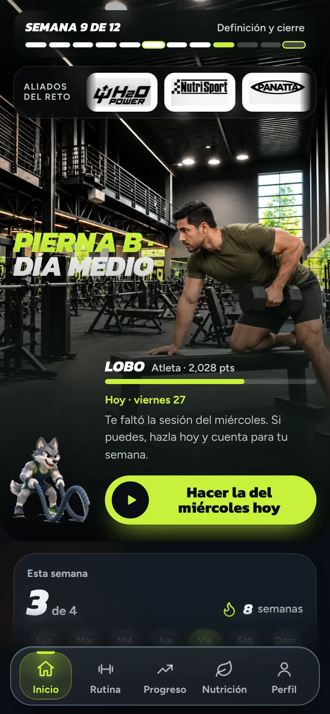
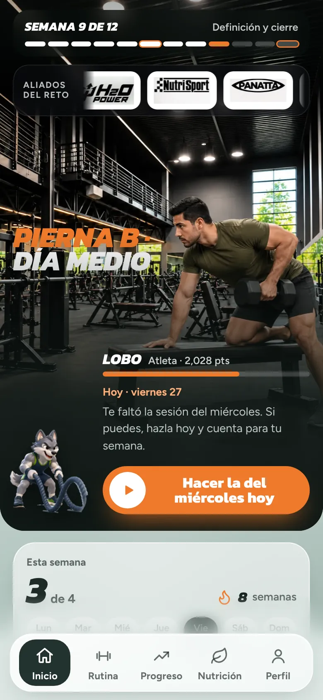
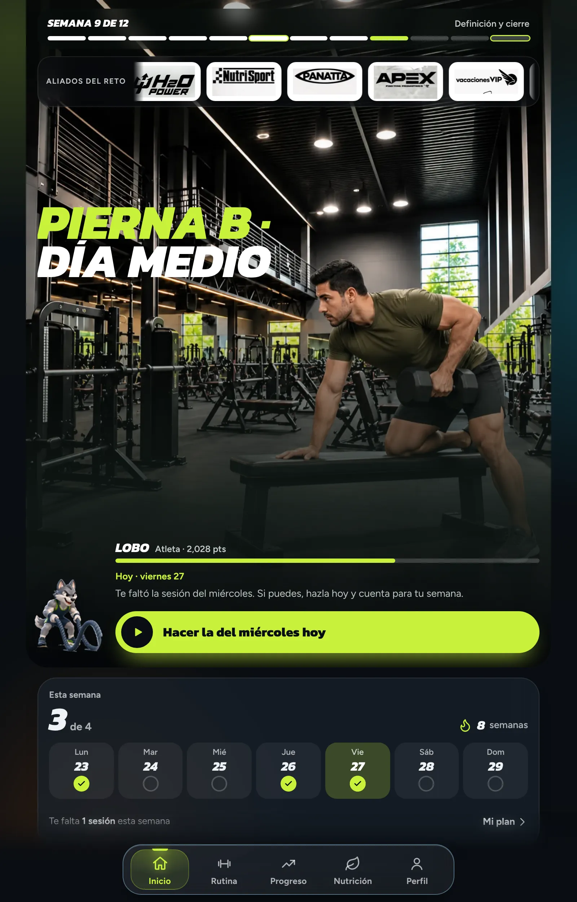

Los patrocinadores suben a la tarjeta de Inicio, entre “Arranca en / Semana” y el título del entrenamiento, en un carrusel pequeño que avanza solo. Las tarjetas grandes de abajo se quitan.
Así se mueve (oscuro)

Oscuro

Salvia
En tableta

Tableta
Cómo funciona
Salen los patrocinadores que tengan activado Aliados del reto en el panel; si no hay ninguno, no aparece el carrusel.
Con 4 o más avanza solo y en ciclo; al tocarlo se detiene unos segundos. Con 3 o menos se quedan quietos.
Cada logo va en un cuadro blanco; al tocarlo se abre su promoción (y cuenta como toque en los resultados).
El título baja lo que mide el carrusel; con “reducir movimiento” no se anima y se desliza con el dedo.